📋 Содержание — Заскоки
01/33 ЗАСКОК

Следите за правильным положением ног!
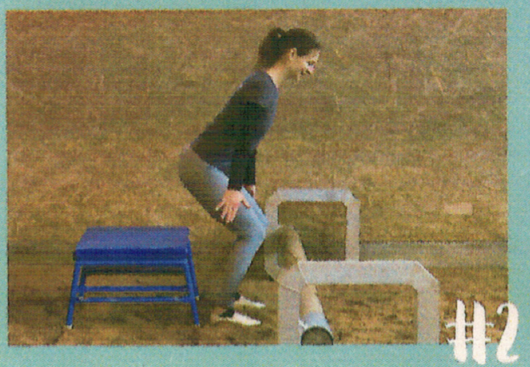
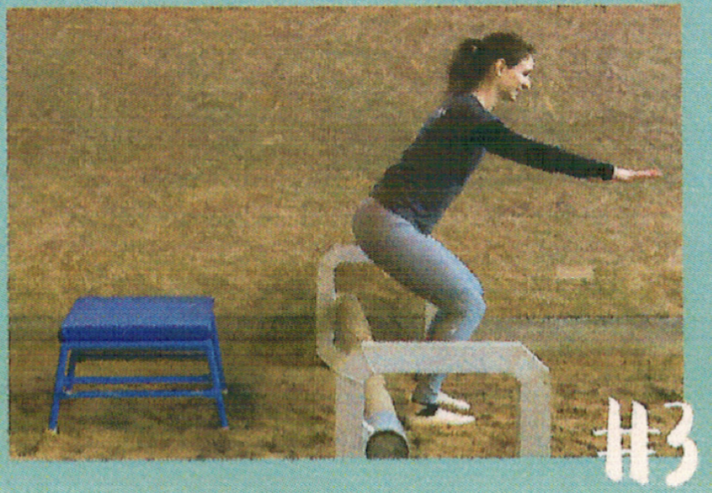
Оборудование
Кавалетти / жерди
Количество повторений
3 подхода по 10 повторений
Внимание
- держим ноги параллельно
Делаем так
- Сядьте на скамейку/табурет. Расставьте ноги на ширину бедер.
- Теперь попробуйте прямо из этого положения выполнить стремительный прыжок через препятствие.
- После мягкого приземления полностью выпрямитесь.
Цель упражнения: Улучшение прыгучести\взрывной силы прыжка (фокус внимания: мышцы бедра).
Важно: держите ноги параллельно, плавность текучесть выполнения движений, корректное приземление.
02/33 ЗАСКОК
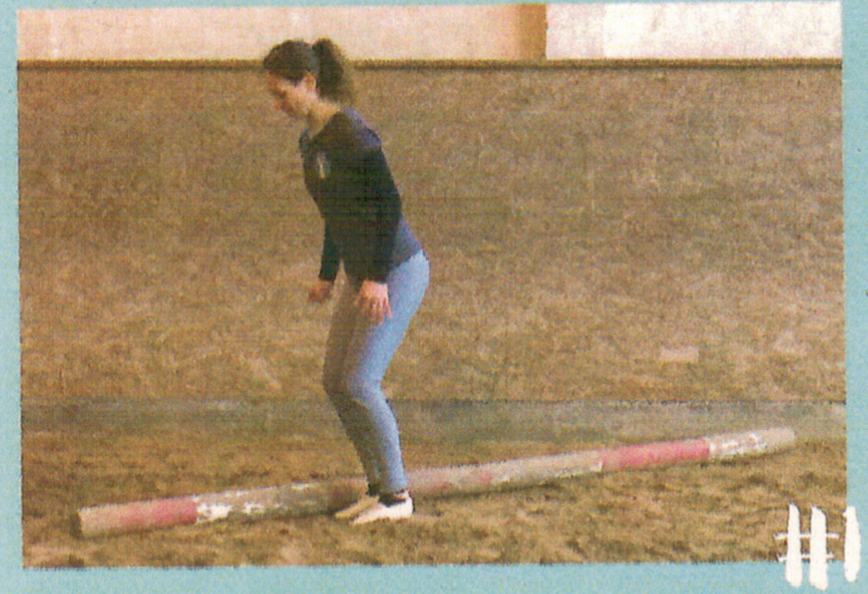
Держи стопы параллельно!
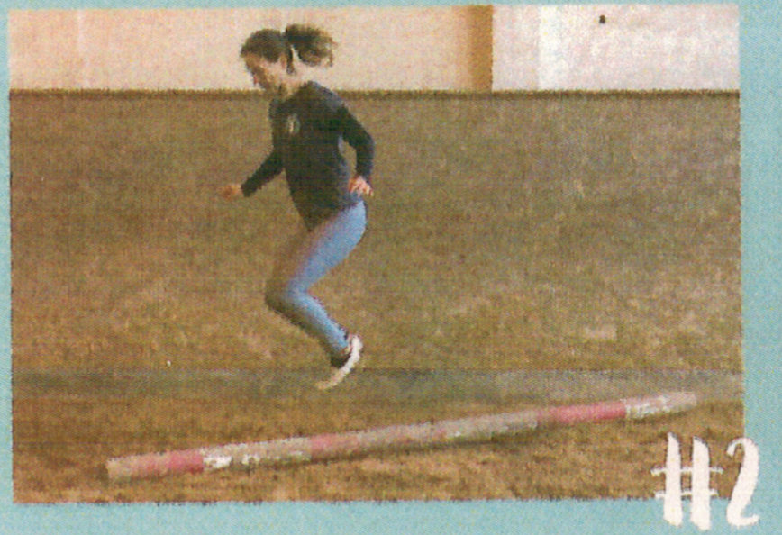
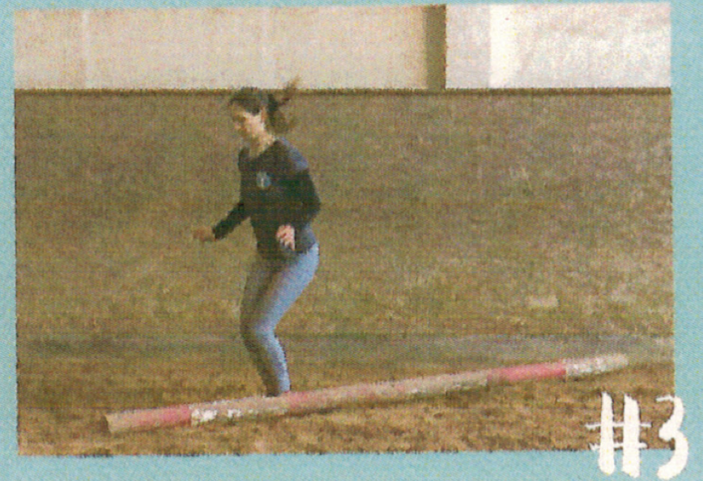
Оборудование
Жердь, штанга
Количество повторений
3 подхода по 10 прыжков
Внимание
- Держи стопы параллельно!
Делаем так
- Встаем двумя ногами сбоку от препятствия.
- Прыжки из стороны в сторону, через препятствие. Выполняется динамично, пружиняще с отталкиванием обеими стопами одновременно («зигзаг»).
Цель упражнения: Улучшить прыгучесть/«взрывную силу» прыжка (основной фокус внимания на мускулатуру голени, голеностопа).
Важно: движение выполняется в едином ритме, делать прыжки в одном темпе, расслабленный корпус.
03/33 ЗАСКОК
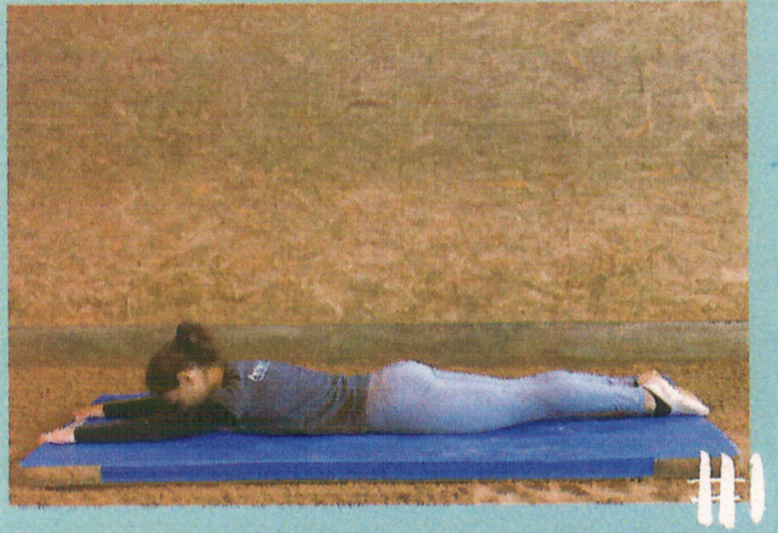
Следите за максимально высоким положением таза!
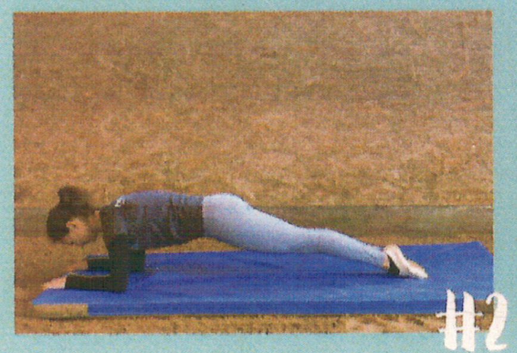
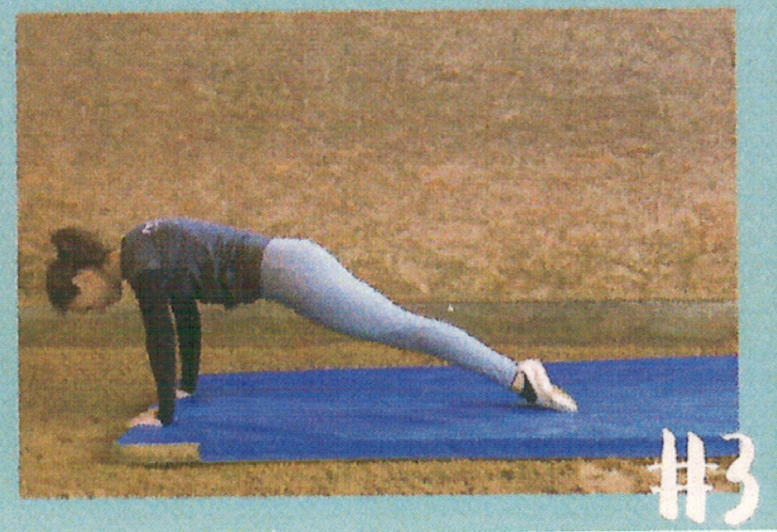
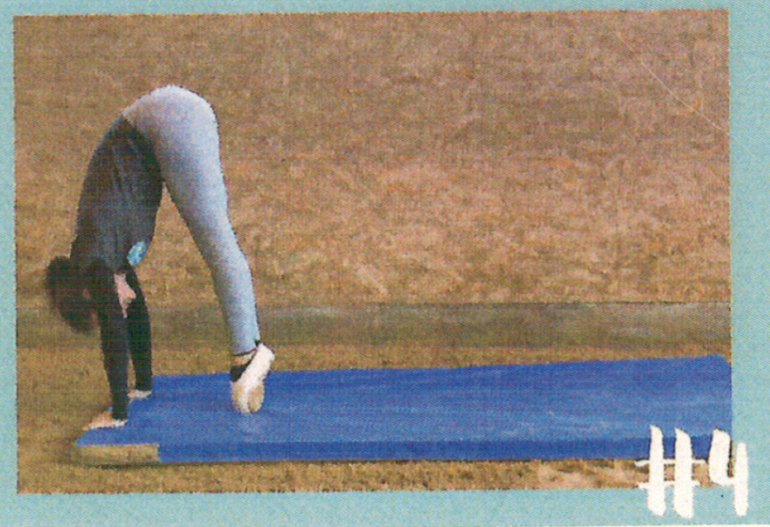
Оборудование
Мат, шерстяные носки (для скольжения)
Количество повторений
3 подхода по 6 повторений
Внимание
- на максимально возможный подъём таза
Делаем так
- Лечь на живот. Руки вперед чуть шире плеч (можно попробовать на максимальную ширину).
- На 1-2 выйти в положение планки с упором на предплечья.
- На 3-4 оставаясь в планке выпрямить руки и перейти в положение упор-лежа.
- На 5-6 плавно поднимая таз вверх перейти в положение «складка», при этом спину округлить и следить за тем, чтобы ноги были вместе.
💡 Совет: наденьте шерстяные носки, чтобы легче скользить по мату.
Цель упражнения: укрепление мышц, необходимых для правильного подъёма, улучшение техники.
Важно: центр тяжести находится примерно над руками в конечном положении. Улучшение техники через «складку».
04/33 ЗАСКОК
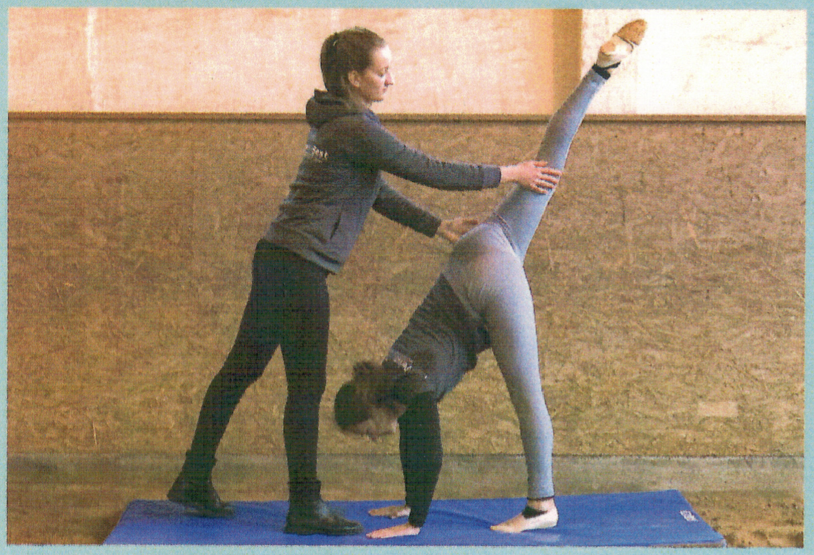
Следите за максимально прямым положением тазобедренного сустава!
Оборудование
Мат, помощь партнера
Количество повторений
3 подхода по 10 повторений
Внимание
- следите за полным разгибанием ноги в тазобедренном суставе
Делаем так
- Поставить руки на землю как можно ближе к ногам. Ноги вместе, выпрямлены.
- Вытяните одну ногу вверх в вертикальный шпагат.
- Следите, чтобы плечи и таз оставались по возможности параллельными земле.
- Партнер помогает поддерживать правильное положение.
Цель упражнения: улучшить последовательность движений маховой ноги.
Важно: Держи плечи и бедра параллельно земле, обе ноги остаются вытянутыми, маховая нога стремится вертикально вверх в одной плоскости.
05/33 ЗАСКОК
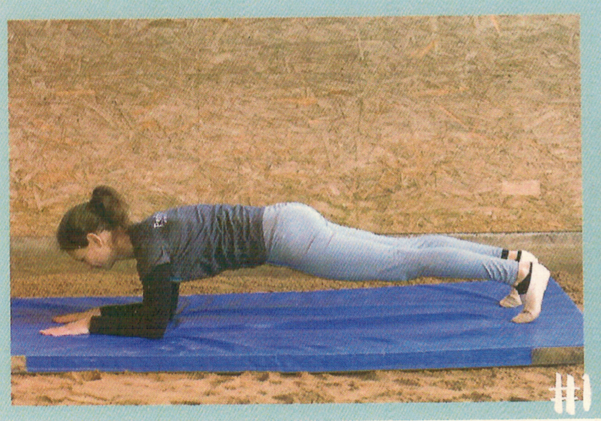
Следите за спокойным, стабильным корпусом!
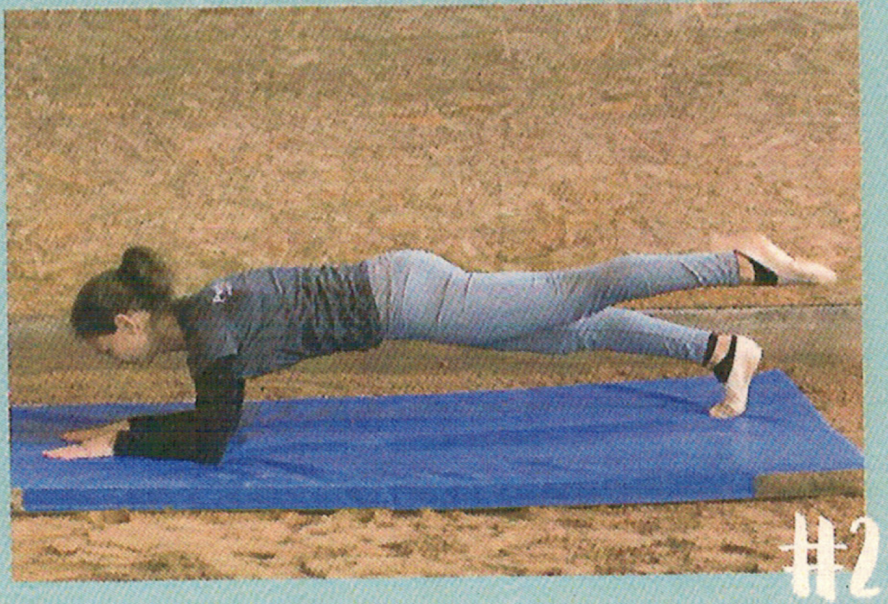
Оборудование
Мат
Количество повторений
3 подхода по 10 повторений
Внимание
- спина ровная, не прогибаемся и не поднимаем таз
Делаем так
- Исходное положение планка на предплечьях, так чтобы локти были прямо под плечами, ноги слегка разведены.
- Подъём и опускание ног попеременно. Медленно, плавно, непрерывно.
- Спина остается выпрямленной, неподвижной. Держите корпус в одном и том же положении.
💡 Совет: при этом сожмите ягодицы и потяните таз назад.
Цель упражнения: научиться удерживать корпус тела в правильном положении во время движения.
Важно: Выталкивание за счет плеч, прямая спина за счет напряжения корпуса, верхняя часть тела остается стабильной. Во время смены ног таз не разворачиваем, сохраняя его в стабильном положении.
06/33 ЗАСКОК
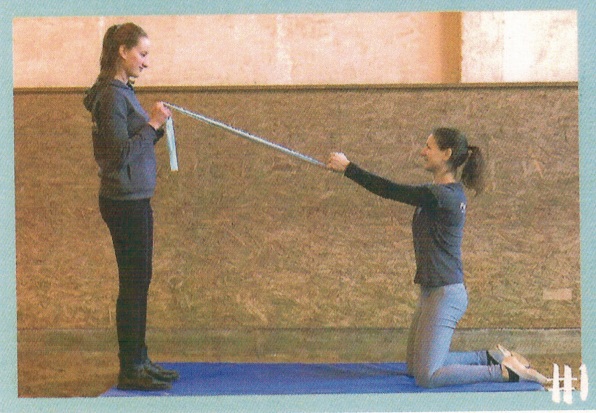
Сделай спину по-настоящему круглой!
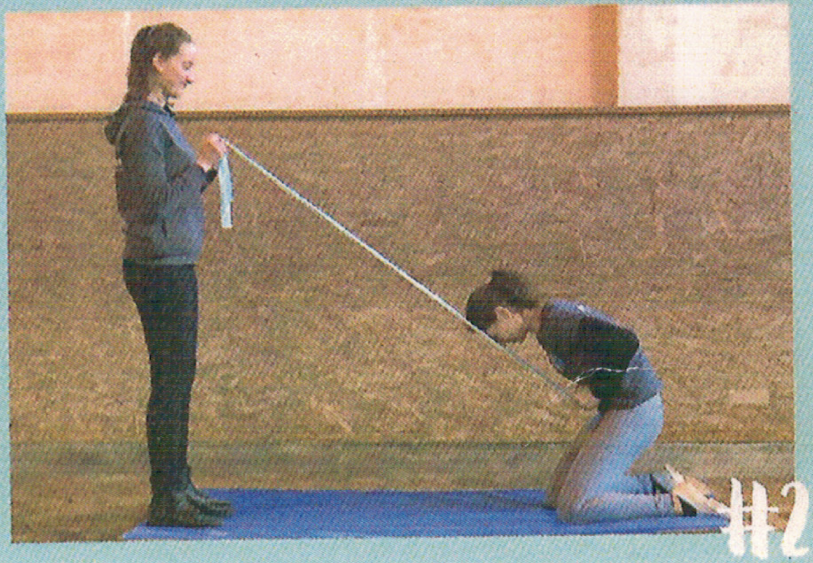
Оборудование
Резиновая лента, помощь партнера
Количество повторений
без указания
Внимание
- Спина «круглая»
Делаем так
- Закрепите ленту на высоте плеч или дайте партнеру ее держать крепко.
- Встаньте на колени на пол на расстоянии примерно 1 метра от места крепления ленты.
- Возьмите концы ленты в обе руки и, вытянув руки, натяните ленту.
- Теперь рывком, обеими руками, потяните ленту к верхней части живота. Постарайтесь максимально возможно округлить спину.
- В конечном положении зафиксируйте на несколько мгновений.
Цель упражнения: укрепление мышц брюшного пресса, улучшение синхронизации работы мышц рук и брюшного пресса.
Важно: спина круглая, ленту тянем к животу.
07/33 ЗАСКОК
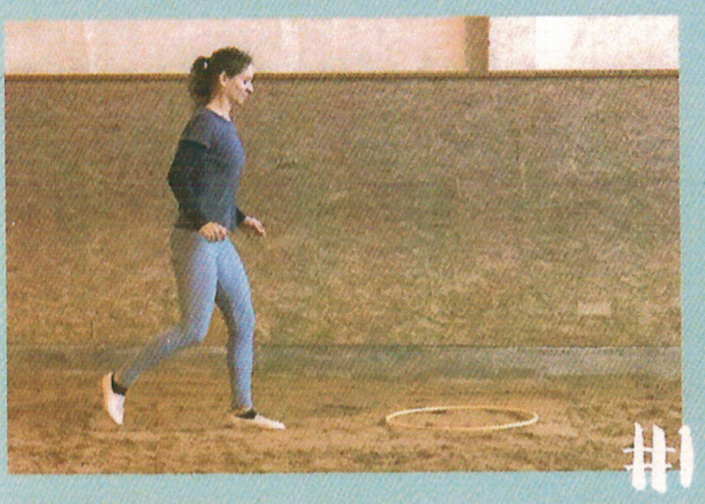
Следите за плавностью выполнения движений!
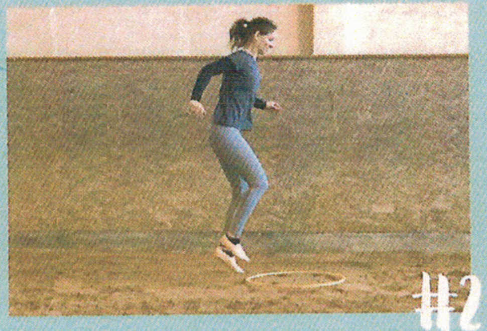
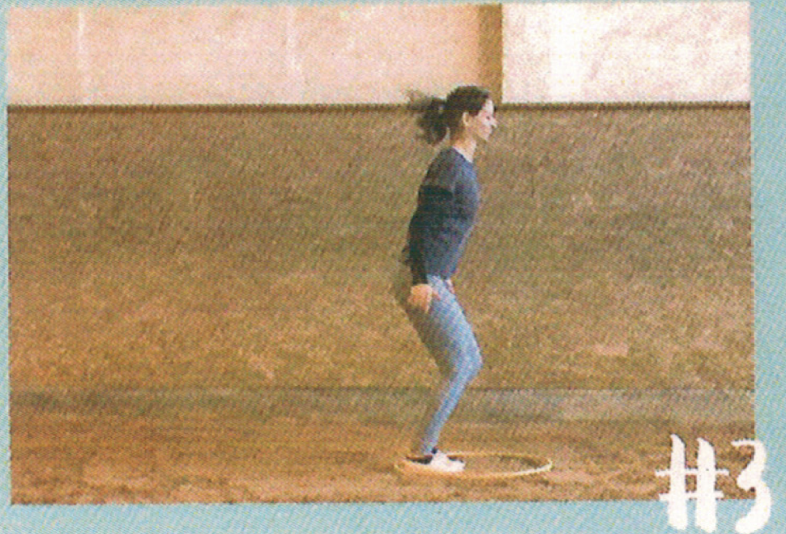
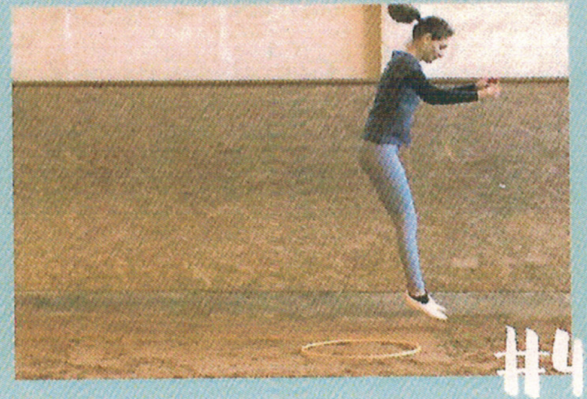
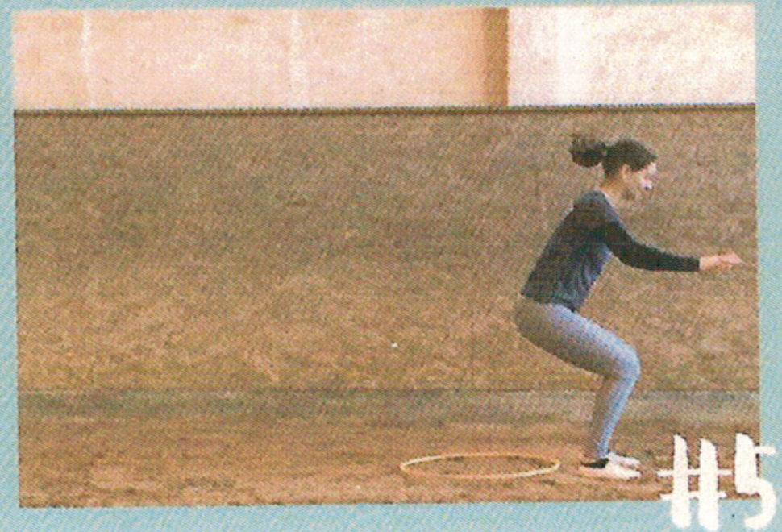
Оборудование
Обруч или подобное
Количество повторений
3 подхода по 6 повторений
Внимание
- следите за тем, чтобы движения были непрерывными
Делаем так
- Начинаем в трех больших шагах от обруча.
- Сделать три шага галопа в направлении обруча.
- Прыгнуть в длину вперед, сильно толкнувшись (рывком) в центр обруча.
- Немедленно выпрыгнуть из него, вытянувшись макушкой максимально вверх.
- Внимание на плавность/непрерывность движений и правильное приземление на обе ноги после выпрыгивания из обруча.
Цель упражнения: улучшение координаций движения отталкивания с галопом, отработка такта шагов.
Важно: плавность движений, ноги вместе близко при отталкивании и приземлении.